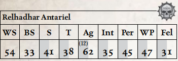

瑞尔哈达尔·安塔瑞尔是科洛努斯扩区中声名显赫的私掠者与海盗，他曾在“悲忆号”上，于著名海盗王子凯卢辛·巴哈鲁多麾下服役，之后便与暮光之刃分道扬镳，追寻自己的命运。一个多世纪以来，这支名为“安塔瑞尔之鹰”的海盗团伙在劫掠中愈发嗜血凶残，甚至曾受雇于影棘阴谋团，也因此被暮光之刃与凯洛尔方舟世界排斥。然而灾难降临：他们的活动引来了裂爪阴谋团的怒火，后者在网道中伏击了安塔瑞尔的部队，掳走了大批灵族俘虏。
数十年来，安塔瑞尔一直是裂爪阴谋团之主最宠爱的玩物，但即便是这般珍贵的战利品，终有让人厌倦的一天。随着岁月流逝，这位海盗的日子越来越痛苦，他的斗志也在无尽折磨中消磨。在他用牙齿咬断裂爪阴谋团首席拉敏毒女的喉咙，又用毒刃砍倒爪领主宫廷的其余成员后，安塔瑞尔被弃置一旁，作为礼物送给安雅拉，任他在竞技场中自生自灭。出人意料的是，安塔瑞尔竟在那里活了下来：他的凶悍赢得了观众的欢呼，人们将他视作枯刃斗教巫灵十分青睐的对手。

移动： 6/12/18/36 承伤： 13
护甲： 粗皮甲（手臂2，躯干2）。 总坚韧加值：3
技能： 杂技（Ag）+10，警觉（Per）+10，指挥（Fel）+10，通用学识（黑暗灵族）（Int），通用学识（灵族）（Int）+10，闪避（Ag）+20，恐吓（S）+10，无声移动（Ag）。
天赋： 双巧手，猫落地，异种武器训练（星镖投射器、星镖手枪、毒晶手枪、巫灵刀），困难目标，仇恨（黑暗灵族），强化感官（听觉、视觉），麻木，闪电反射，近战武器训练（通用），抵抗（毒素），冲刺（Sprint），灵巧侧步，迅捷打击，双武器战斗（射击、近战）。
特性： 超自然敏捷（x2），血手触碰†。
†血手触碰： 此灵族经历了无休止的战斗，没有任何生物能毫发无损地承受这一切。为了生存，他拥抱了凯拉·门沙·凯恩的狂怒与凶残，并屈服于其诱惑。作为一个全动作，灵族可汲取血手战神的永恒之怒，在战斗结束前获得 +10 武器技能与敏捷，且其所有近战攻击视为具有 裂品质，但在此期间及之后的 1d5 小时内，其射击技能、智力与交际承受 –10 减值。
武器： 2把偷来的巫灵刀（近战；1d10+4 R；穿甲3；锋锐）。
装备： 魂石。